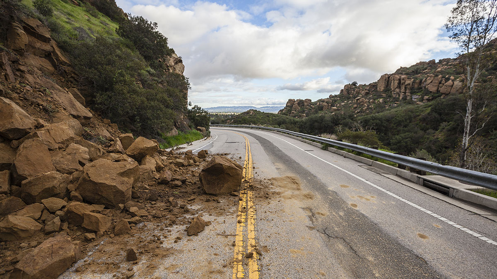

The Story
Gravity is a relentless, invisible force pulling everything toward the center of the Earth. For centuries, the friction holding soil, roots, and rock together is strong enough to resist this pull. But a landslide occurs when that delicate balance is finally broken. This can happen through a sudden shock, like an earthquake, or more commonly, through saturation. When massive amounts of rainfall soak into the ground, the water acts as a lubricant, separating the grains of soil and drastically reducing the friction that holds the slope together.
Once the threshold is crossed, the results are devastatingly fast. The earth literally gives way. What starts as a small crack can instantly become a massive debris flow—a roaring river of mud, boulders, and uprooted trees that can travel up to 50 miles per hour. Unlike a flood of just water, a landslide carries an immense physical weight that acts like a solid bulldozer, crushing buildings, burying roads, and wiping out entire communities without any warning.
Yet, just like other natural hazards, landslides play an essential role in the Earth's natural evolution. They are the primary way that steep mountain ranges are eventually worn down, redistributing essential minerals and soil to the valleys below, creating the rich, flat floodplains where forests and human civilizations eventually thrive. It is the planet’s violent, messy way of achieving geological equilibrium.

Philosophical Questions
Does gravity eventually conquer everything?
Every mountain range on Earth is fighting a losing battle against gravity. No matter how high the tectonic plates push the peaks, gravity and erosion will eventually pull them all down into the sea.
This serves as a profound metaphor for human endeavor. We spend our lives building empires, homes, and legacies, pushing upward against the forces of time and decay. A landslide reminds us that in the end, nature always reclaims its materials.
How much of our safety relies on an invisible balance?
A hillside can look perfectly stable for thousands of years, with large trees and established ecosystems. Yet, it only takes a few days of heavy rain to cross a microscopic threshold of friction, bringing the entire structure crashing down.
This forces us to think about the invisible tipping points in our own lives and societies. It asks us to consider how many of our systems—our economies, our climate, our peace—are resting on a similarly fragile, unseen balance that could easily give way.
Can we adapt to a world that refuses to stand still?
Human engineering tries to bolt the mountains together. We build retaining walls and concrete barriers, attempting to freeze the landscape in place so it accommodates our cities.
But a landslide proves that the Earth is a fluid, moving canvas. It challenges our desire to conquer the environment, suggesting instead that true resilience lies in flexibility—in learning how to live lightly on the earth rather than trying to force a moving planet to stand still.